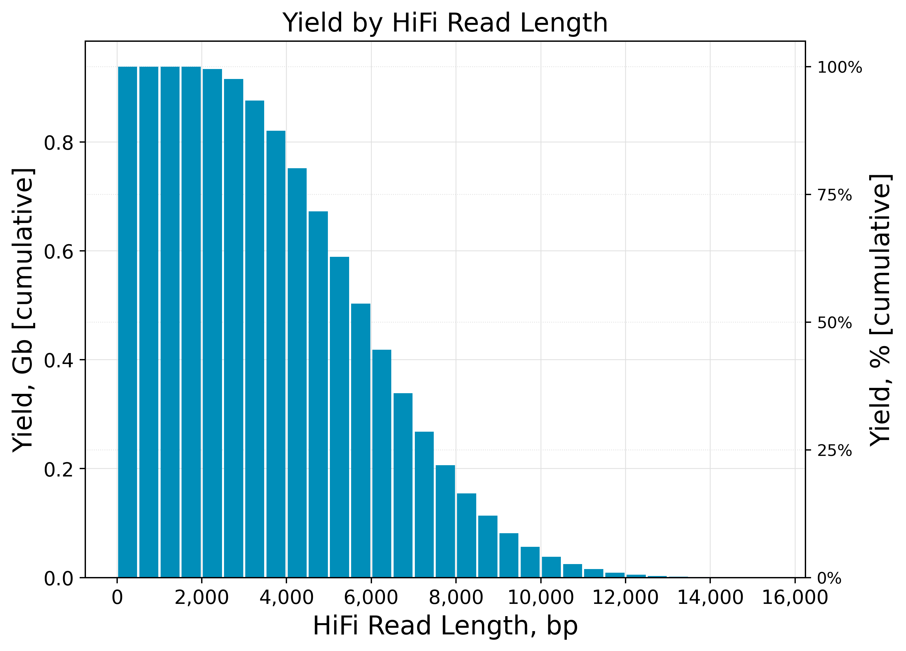
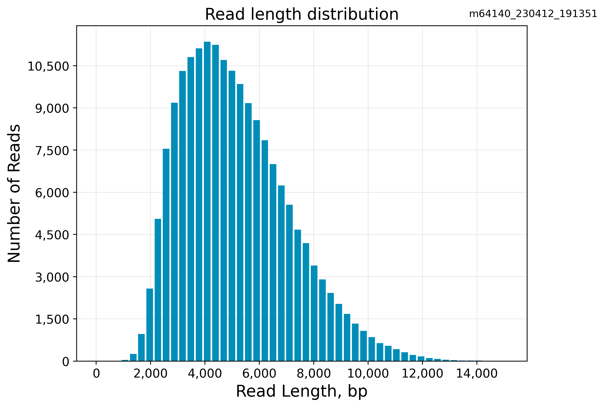
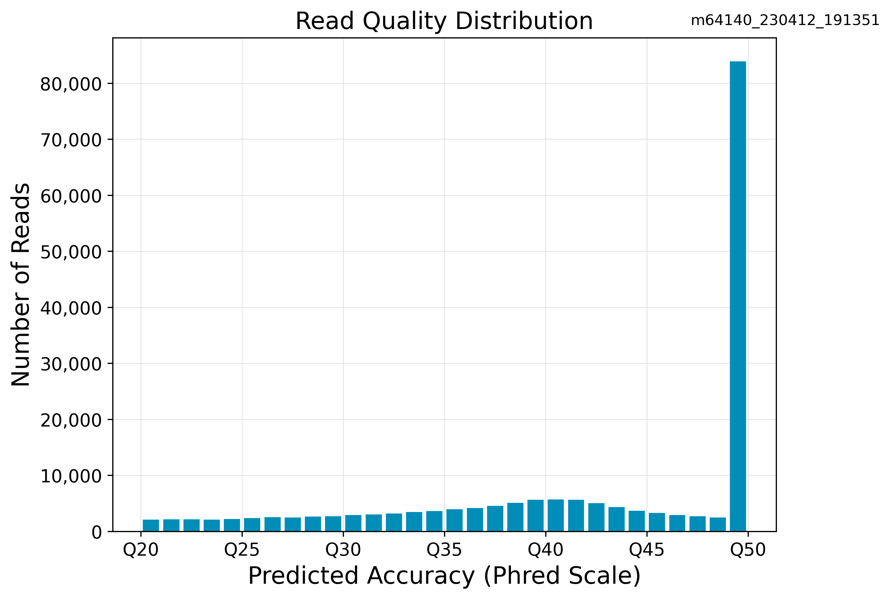
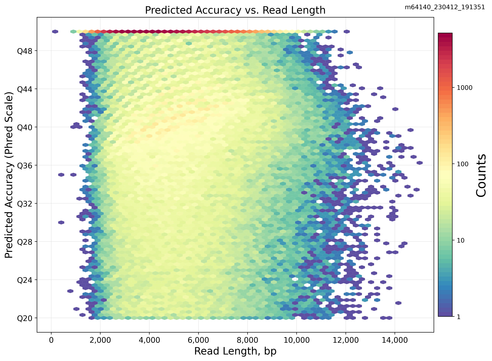

CCS Analysis Report
Attributes
- HiFi reads: 182906
- HiFi reads yield: 938683304
- HiFi reads length (mean): 5132
- HiFi reads length (median, bp): 4848
- HiFi Read Length N50 (bp): 5698
- HiFi Read Quality (median): Q46
- HiFi Read Quality (median): 46
HiFi Read Length Summary
| Read Length (kb) |
Reads |
Reads (%) |
Yield (Gb) |
Yield (%) |
| ≥ 0 |
182906 |
100.0 |
938683304 |
100.0 |
| ≥ 5,000 |
86323 |
47.19528063595508 |
589126584 |
62.760952654592 |
| ≥ 10,000 |
3456 |
1.8894951505144717 |
37905249 |
4.038129669343729 |
| ≥ 15,000 |
12 |
0.006560747050397471 |
195447 |
0.02082139941843474 |
| ≥ 20,000 |
0 |
0.0 |
0 |
0.0 |
| ≥ 25,000 |
0 |
0.0 |
0 |
0.0 |
| ≥ 30,000 |
0 |
0.0 |
0 |
0.0 |
| ≥ 35,000 |
0 |
0.0 |
0 |
0.0 |
| ≥ 40,000 |
0 |
0.0 |
0 |
0.0 |
HiFi Read Quality Summary
| Read Quality (Phred) |
Reads |
Reads (%) |
Yield (Gb) |
Yield (%) |
| ≥ Q20 |
182906 |
100.0 |
938683304 |
100.0 |
| ≥ Q30 |
159369 |
87.13164138956623 |
807425306 |
86.01679635286237 |
| ≥ Q40 |
119722 |
65.45547986397384 |
585951426 |
62.422696078974894 |
| ≥ Q50 |
81614 |
44.62073414759494 |
364123948 |
38.790926231281944 |
Read Length Distribution
HiFi read length distribution
Yield by HiFi Read Length

Read length distribution

Read Quality Distribution

Predicted Accuracy vs. Read Length
